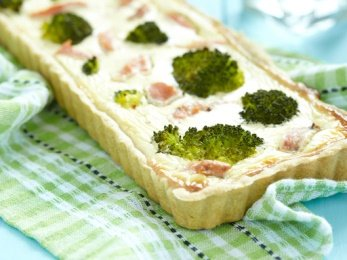

Tarte brocolis lardons
Ingredients
×
- 750 g de brocolis
- 100 g de jambon cru
- 2 oeufs
- 15 cl de crème
- 75 g de gruyère râpé
- 0.5 c. à c. de sel
- 1 pincée de poivre
- 1 pincée de muscade
- 1 pâte brisée

Préparation
Étape 1
Diviser 750 g de brocolis en bouquets et les cuire 10min à l’eau bouillante (ou 5min au micro-ondes à 600W, couverts, avec un peu d’eau).
Étape 2
Dégraisser 100 g de jambon cru et le tailler en lanières.
Étape 3
Battre 2 oeufs avec 15 cl de crème, puis incorporer les 2/3 de 75 g de gruyère râpé, 0.5 c. à c. de sel, 1 pincée de poivre et 1 pincée de muscade.
Étape 4
Piquer 1 pâte brisée, y étaler les brocolis et le jambon, puis napper de la préparation. Parsemer le reste du gruyère et cuire 30min à mi-hauteur.
Conseils
- Le jambon cru peut être remplacé par des lardons.